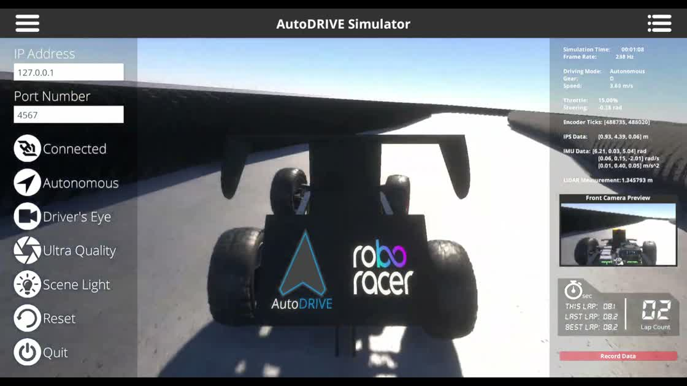
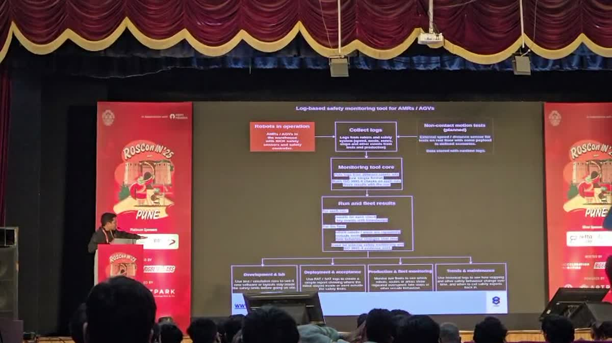

Physical AI · General industrial intelligenceFounder & builder / India
Second company / Building in stealthBuilding
toward
Industry 6.0.
I’m building my second company in Physical AI: factories that understand a production goal, coordinate machines and verify the result.
Previously founded AviRob. My work spans learned dynamics, policy optimisation, MPCC, control runtimes and industrial verification.
Explore my work ↘ 01 / Selected workBuilt across
the entire loop.
Trust-region solvers and learned dynamics. Actuator-constrained execution. Multi-robot command authority. Machine evidence and geometric verification. The systems behind my work as a technical founder.

ICRA 2025 / Qualification footage01 / Autonomous systemsOpen source
ICRA autonomous racing / AutoDRIVE
- Designed LiDAR observation contracts and coupled steering–throttle action spaces.
- Built the ROS 2 ↔ Gymnasium training loop, reward experiments and checkpoint evaluation.
- Extended the system with ONNX export, TensorRT build tooling and Triton serving adapters.
RLx-Core / learning systemsLearn the update. Learn the dynamics.01 / OptimiseH·Δθ = g
02 / Estimate10 critics · subset 2
03 / Modelμϕ(s,a), log σ²ϕ(s,a)
04 / Deploypolicy + runtime contract
02 / Learning & world modelsOpen source
RLx-Core / Reinforcement Learning Toolkit
- TRPO from the update rule: damped KL Hessian–vector products, conjugate gradients, backtracking line search and rollback.
- REDQ with 10 critics, random 2-critic targets, UTD 20 and learned entropy temperature.
- Model-based experiments: JAX/Flax probabilistic dynamics, stochastic policy modules and an Isaac Sim Franka manipulation scene.
- World-model research spanning PETS, PlaNet, Dreamer and MuZero; industrial runtime design with explicit policy contracts and handover modes.
C++20 / fixed-period controlThe actuator limit feeds back into state.01 / Computeu_raw = P + I + D + FF
02 / Constrainsaturate → rate → jerk
03 / Reconcileu_applied − u_raw
04 / Supervisehealth + watchdog
03 / Control engineeringOpen source
C++ control runtime
- Preallocated controller state, explicit lifecycle and fixed-period update contracts.
- Ordered saturation → rate → jerk constraints, with anti-windup fed by the constrained command.
- Gain scheduling, Tustin-discretised derivative filtering, bumpless transfer and watchdog fallback.
ROS 2 Jazzy / command authorityOne map. Three localisation owners.01 / Localisemap → rᵢ/odom → rᵢ/base
02 / ResolveTF ownership + freshness
03 / Arbitrateraw intent → command gate
04 / Recordfinal command + episode
04 / Industrial roboticsPrivate work
Multi-robot autonomy runtime
- Shared occupancy map with independently namespaced AMCL and verified map–odom–base chains.
- Dual-LiDAR merging, frame-authority conflict detection and stale-publisher expiry.
- Freshness-gated velocity arbitration, deliberate restart logic and deterministic scenario capture.
Industrial recordings / compilationEvery value carries its origin.01 / Preserveraw bytes + source identity
02 / Decodeframes → canonical values
03 / Aligntime basis + source authority
04 / Compilerun bundle + replay
05 / AviRob / industrial systemsPrivate work
Machine evidence compiler
- Raw-source preservation, protocol framing and canonical machine-state contracts.
- Transport gap, duplication, reordering and reset tracking across recorded sources.
- Time alignment, source authority, provenance and deterministic bundle generation.
Temporal geometry / behavioural evidenceState × time × geometry → finding01 / Alignbounded hold-last
02 / Groundsite model + robot footprint
03 / Gaterequired evidence → validator
04 / Explainverdict + source window
06 / AviRob / geometry & verificationPrivate work
Geometric verification engine
- Polygon-based zone membership, directional clearance and nearest-structure analysis.
- Evidence-window validators for speed, restart discipline, warnings and interlocks.
- Deterministic PASS / FAIL / NOT_VERIFIABLE findings tied to original observations.
Visual driving. Native inference. Private compute.
More systems I’ve builtAlso in the control stackModel Predictive Contouring Control MPCC · RL/classical local planning · Constrained actuator execution
My technical background ↗
02 / Building in stealthIndustry 6.0.
Intelligence at
industrial scale.
I’m building toward dark factories: industrial systems that can interpret a production goal, coordinate machines, recover from disruption, and verify the work.
My second company brings the learning, control and verification threads together. The ambition is general industrial intelligence, across machines, processes and industries.
The technical direction ↗ The system I’m working toward
01Understand
Turn production intent into a physical outcome and its constraints.
02Execute
Ground plans in machine capabilities, state and control authority.
03Recover
Detect divergence, replan and handle what the original plan missed.
04Verify
Measure whether the physical outcome meets its acceptance criteria.
↖ Experience from execution informs the next decision
03 / The trajectoryStarted with robots.
Kept going deeper.
From competition robots to autonomous racing, then AviRob and a second company. Each step brought more of the physical system into the problem.
2018–2022
Built robots. Put them to the test.
WRO India: regional participation in 2018, regional Junior second place in 2019, and a RoboMission Senior Silver Badge at the 2022 National Championship.
2023–2024
Moved into autonomous vehicles.
Worked on RL and classical local planning for a physical golf cart, alongside visual driving, representation transfer and imitation-learning experiments in CARLA.
2025
Built the ICRA racing controller independently.
Third in qualification in the ICRA RoboRacer Sim Racing League. An 81.32-second run, zero collisions and an 8.03-second best lap.
2025–2026
Founded AviRob. Went into industrial systems.
Built robot runtimes, machine-evidence compilation and geometric verification. Spoke at ROSCon India 2025 about the AMR/AGV log and safety-evidence problem.
2026
Building a second company in stealth.
Working on Physical AI for industry, toward machines and factories that can adapt, coordinate, recover and verify their work.

▶ Watch the talk04 / On stageInside AviRob’s
robot evidence stack.
At ROSCon India 2025, I presented the architecture behind our AMR/AGV monitoring work: collecting fragmented logs, reconstructing machine behaviour and turning it into inspectable engineering evidence.
ROSCon India 2025 ↗